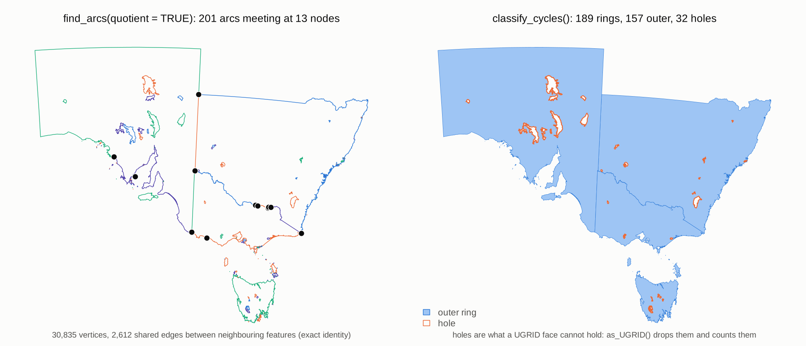
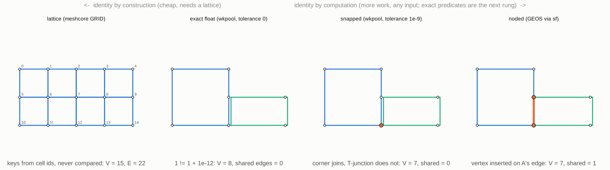
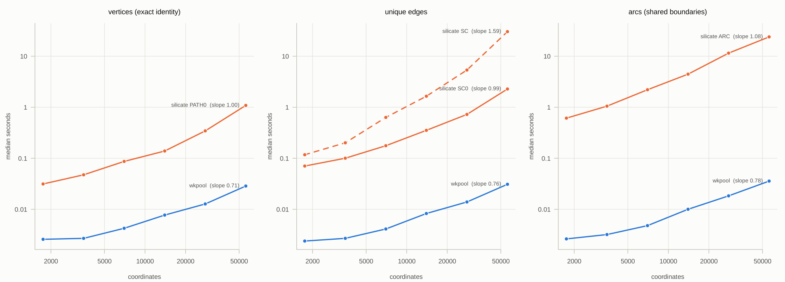

Vertex pool topology for geometry handled by wk.
Design philosophy
Simple features throws away topology — every polygon stores its own coordinates, shared boundaries are duplicated, and expensive operations (GEOS) are needed to rediscover this structure which is then again discarded.
wkpool takes a different approach:
- Segments are atomic: Everything is edges (vertex pairs). Polygons, linestrings, meshes — all just segments with different grouping.
-
Vertices live in a pool: Coordinates stored once, referenced by integer ID (
.vx). -
Observe, don’t correct:
establish_topology()represents the truth of your input. Snapping/fixing is a separate, explicit decision. -
Topology is discoverable:
merge_coincident()finds shared vertices. Shared boundaries, neighbour relations — they emerge from the data. -
Feature provenance: Segments track which feature they came from (
.feature), enabling adjacency and boundary queries.
Installation
From CRAN use
install.packages("wkpool")For development version use
#install.packages("remotes")
remotes::install_github("hypertidy/wkpool")Usage
library(wkpool)
library(wk)
# Any wk-handleable geometry
#x <- wk::as_wkb(<wk-compatible>)
x <- wk::as_wkb(c(
paste0(
"MULTIPOLYGON (((0 0, 0 1, 0.75 1, 1 0.8, 0.5 0.7, ",
"0.8 0.6, 0.69 0, 0 0), (0.2 0.2, 0.5 0.2, ",
"0.5 0.4, 0.3 0.6, 0.2 0.4, 0.2 0.2)))"),
"MULTIPOLYGON (((0.69 0, 0.8 0.6, 1.1 0.63, 1.23 0.3, 0.69 0)))"
))
# Establish topology (no coordinate merging yet)
pool <- establish_topology(x)
# What do we have?
topology_report(pool)
#> $n_vertices_raw
#> [1] 19
#>
#> $n_vertices_unique
#> [1] 14
#>
#> $n_duplicate_vertices
#> [1] 5
#>
#> $n_near_miss_vertices
#> [1] 0
#>
#> $n_segments
#> [1] 16
#>
#> $n_shared_edges
#> [1] 1
#>
#> $n_features
#> [1] 2
# Merge coincident vertices (exact match)
merged <- merge_coincident(pool, tolerance = 0)
# Find shared boundaries
shared <- find_shared_edges(merged)
# Internal boundaries (edges shared by exactly 2 features)
internal <- find_internal_boundaries(merged)
# Neighbour relations
neighbours <- find_neighbours(merged, type = "edge") # share a boundary
neighbours_v <- find_neighbours(merged, type = "vertex") # share any vertex
# Access the raw structure
pool_vertices(merged) # data.frame: .vx, x, y
#> .vx x y
#> 1 1 0.00 0.00
#> 2 2 0.00 1.00
#> 3 3 0.75 1.00
#> 4 4 1.00 0.80
#> 5 5 0.50 0.70
#> 6 6 0.80 0.60
#> 7 7 0.69 0.00
#> 9 8 0.20 0.20
#> 10 9 0.50 0.20
#> 11 10 0.50 0.40
#> 12 11 0.30 0.60
#> 13 12 0.20 0.40
#> 17 13 1.10 0.63
#> 18 14 1.23 0.30
pool_segments(merged) # data.frame: .vx0, .vx1, .feature
#> .vx0 .vx1 .feature .path
#> 1 1 2 1 1
#> 2 2 3 1 1
#> 3 3 4 1 1
#> 4 4 5 1 1
#> 5 5 6 1 1
#> 6 6 7 1 1
#> 7 7 1 1 1
#> 8 8 9 1 2
#> 9 9 10 1 2
#> 10 10 11 1 2
#> 11 11 12 1 2
#> 12 12 8 1 2
#> 13 7 6 2 3
#> 14 6 13 2 3
#> 15 13 14 2 3
#> 16 14 7 2 3Shared boundaries and holes
inlandwaters (in silicate) has six features with 189 rings, 32 of them holes, and neighbouring states that share long boundaries vertex for vertex. After merge_coincident() those boundaries are the same vertex pairs, so the quotient graph walks each shared boundary once:
x <- wk::as_wkb(sf::st_geometry(silicate::inlandwaters))
pool <- merge_coincident(establish_topology(x))
find_arcs(pool, quotient = TRUE) # 201 arcs
find_nodes(pool, quotient = TRUE) # 13 nodes where three or more edges meet
classify_cycles(pool) # 189 rings: 157 outer, 32 holes
Without quotient = TRUE every vertex inside a shared boundary has degree 4 (each feature carries its own copy of the edge), so find_nodes() returns 2,619 nodes and find_arcs() 5,418 arcs. Use the quotient graph for coverages; the default counts every segment.
Vertex identity
wkpool covers two rungs of a ladder of ways a vertex can be “the same”: exact float (merge_coincident(tolerance = 0)) and snapped (tolerance > 0). It does not node: a vertex lying on another feature’s edge stays a T-junction until something like GEOS inserts it. Above exact float, a lattice (a raster, a discrete global grid) can give identity by construction, with no comparison at all.

Performance
All pipelines scale linearly. Against silicate on the same inputs (bench/README.md has the full tables), wkpool is 1.6 to 29 times faster than PATH0() for vertices and 12 to 1300 times faster than SC() and ARC() for edges and arcs.

Related
wkpool is machinery: silicate’s models and sc_* verbs can sit on it, and so can other mesh models. Work in progress on top of it:
Key decisions
| Decision | Choice | Rationale |
|---|---|---|
| Pool scope | Per-vector, sidecar attribute | No wk core changes needed, n-geometry ready |
| Snapping | Observe don’t correct | Represent truth, fixing is separate |
| Vertex identity | Minted .vx integer |
Survives subset, lighter than UUID |
| Segment identity | Derived from vertex pair | No ID to track, tuple IS identity |
| Primary vctr | Segments | Geometry is what you subset, vertices follow |
| Foundation | vctrs | Principled combine/subset, tidyverse alignment |
Code of Conduct
Please note that the wkpool project is released with a Contributor Code of Conduct. By contributing to this project, you agree to abide by its terms.